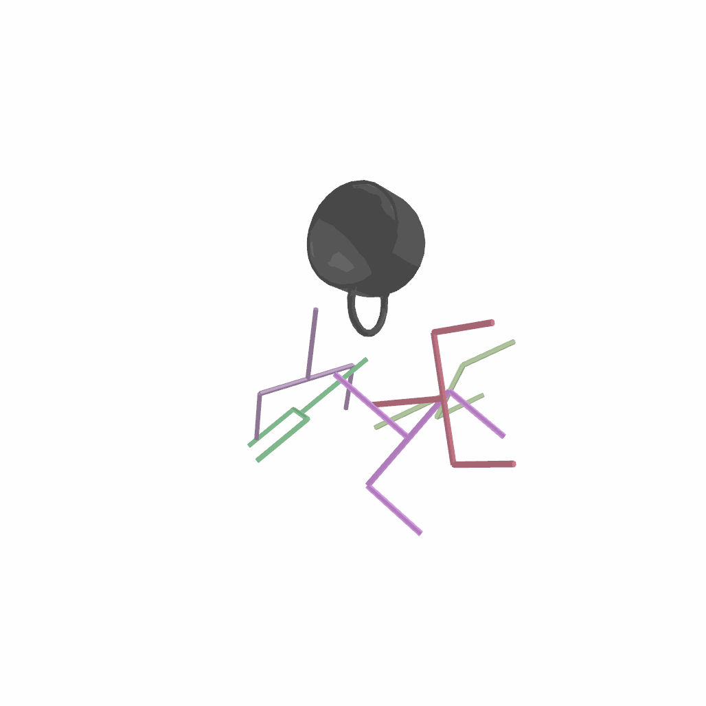
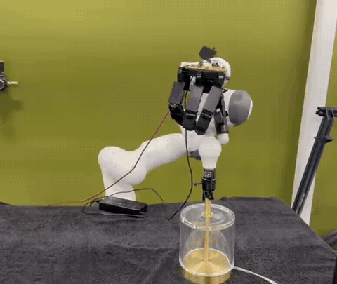
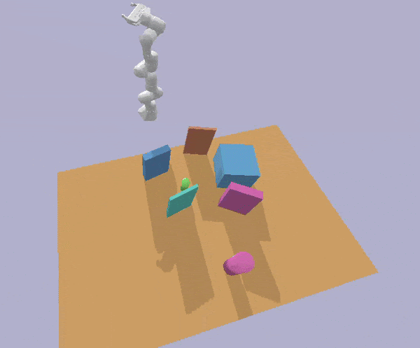

Hey, I'm Julen! I am a researcher in robot learning. I am currently a Member of the Technical Staff at Amazon FAR, working on dexterous manipulation. Previously, I was a Research Scientist in the Robotics group at META FAIR. I received my PhD in Computer Science from TU Darmstadt, advised by Prof. Jan Peters.
My goal is to build generalist robots: finding new ways to scale robot data, and new algorithms and architectures that generalize. Right now I am focused on dexterous manipulation, dexterous tool use, real2sim2real, and post-training RL. If you are interested in any of these topics, get in touch!
If you have any questions or want to collaborate, feel free to send me an email! I am always excited to learn more by talking with people.

SE(3)-DiffusionFields · ICRA 2023
SPIDER · 2025
Global Tensor Motion Planning · RA-L 2025
→ Full list of publications on Google Scholar.